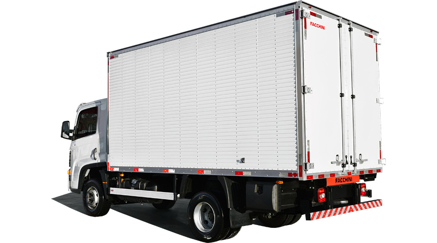
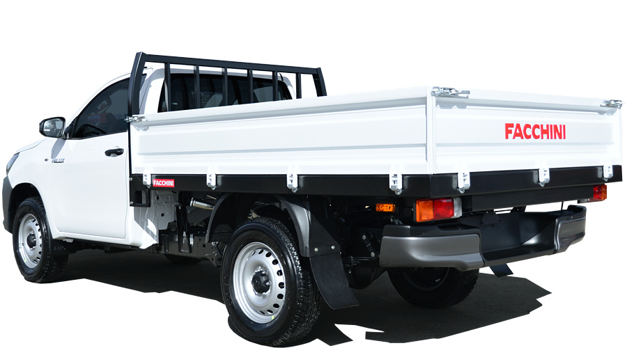

Líder em vendas no país, os furgões Facchini são reconhecidos pela resistência e acabamento superior. O Furgão Carga Seca pode ser fabricado com as laterais em chapa lisa ou corrugada, a base em aço é toda pintada a pó dando mais qualidade e resistência à pintura.
FURGÃO CARGA SECA | LEVE
| Compenentes | Descrição | ||
|---|---|---|---|
| ESTRUTURA INFERIOR | Longarinas, travessas e fechamentos em perfis extrudados de alumínio, montagem por meio de uniões lock bolt. | ||
| SISTEMA ELÉTRICO | Instalação elétrica conforme legislação. | ||
| ILUMINAÇÃO INTERNA | Fita Cob Led. | ||
| COMPONENTES | PLACA DE ALUPLAST: Painel de alumínio com interior de plástico de alta densidade, de fácil manutenção e total resistência a água. | ||
| PINTURA | Limpeza com desengraxante e fosfatizante químico. Base: Primer anticorrosivo. Acabamento: Pintura eletrostática a pó. |
||

Produto destinado para o transporte de carga geral, atendendo as novas resoluções do CONTRAN referente a amarrações de carga. Capacidade de carga até PBT 3.500 kg | Tampas com altura de 400 mm e fechamento com travas de mola de pressão e pegador ergonômico.
CARROCERIA CARGA SECA | LEVE
| Compenentes | Descrição | ||
|---|---|---|---|
| ESTRUTURA | Longarinas: Aço SAE 1020 perfil "C". Travessas: Aço SAE 1020 perfil "C". Viga lateral: Aço SAE 1020 perfil "U" fechando o quadro sobre as travessas. |
||
| CAIXA DE CARGA | Dimensões Externas: Comprimento: 1.770 mm. Largura: 1.830 mm|mesma da caçamba original. Altura: 400 mm. Tampas: Módulos laterais em alumínio anodizado com trancas plásticas embutidas, modelo europeu, e pilar traseiro removível. Frente: Pés- direitos perfil "U"; fechamento em aço modulado cortado a laser tipo tela. Assoalho: Aço SAE 1020 3 mm com soldas sistema Mig automático e pontos de amarração interno. |
||
| ACESSÓRIOS | Paralamas plásticos e parachoque traseiro reforçado. | ||
| OPCIONAL | Holofotes traseiros em LED para iluminação de trabalhos. | ||
| PINTURA | Limpeza com desengraxante químico e fosfatização. Base e Frente: Pintura eletrostática a pó na cor preta. |
||